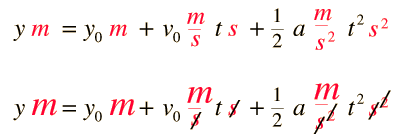
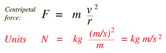
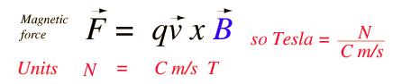

Dimensional Analysis
Having the same units on both sides of an equation does not gaurantee that the equation is correct, but having different units on the two sides of an equation certainly gaurantees that it is wrong! So it is good practice to reconcile units in problem solving as one check on the consistency of the work. Units obey the same algebraic rules as numbers, so they can serve as one diagnostic tool to check your problem solutions.
For example, in the solution for distance in constant acceleration motion, the distance is set equal to an expression involving combinations of distance, time, velocity and acceleration. But the combination of the units in each of the terms must yield just the unit of distance, since the left hand side of the equation has the dimension of distance.

Combinations of units pervade all of physics, and doing some analysis of the units is common practice. For example, in the case of centripetal force, it is not immediately evident that the quantity on the right has the dimensions of force, but it must. Checking it out:

Often the use of dimensional analysis can be helpful as a reminder of what specialized units contain. In the case of the magnetic force on a moving charge, the magnetic field unit is a Tesla. But what is a Tesla? Checking out the force equation can remind you of the combination of basic units that is contained in the unit named a Tesla.

|